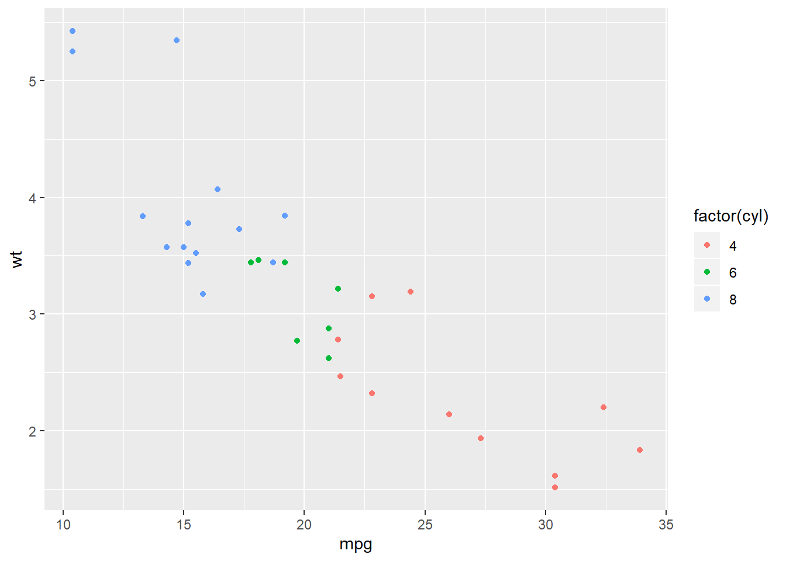
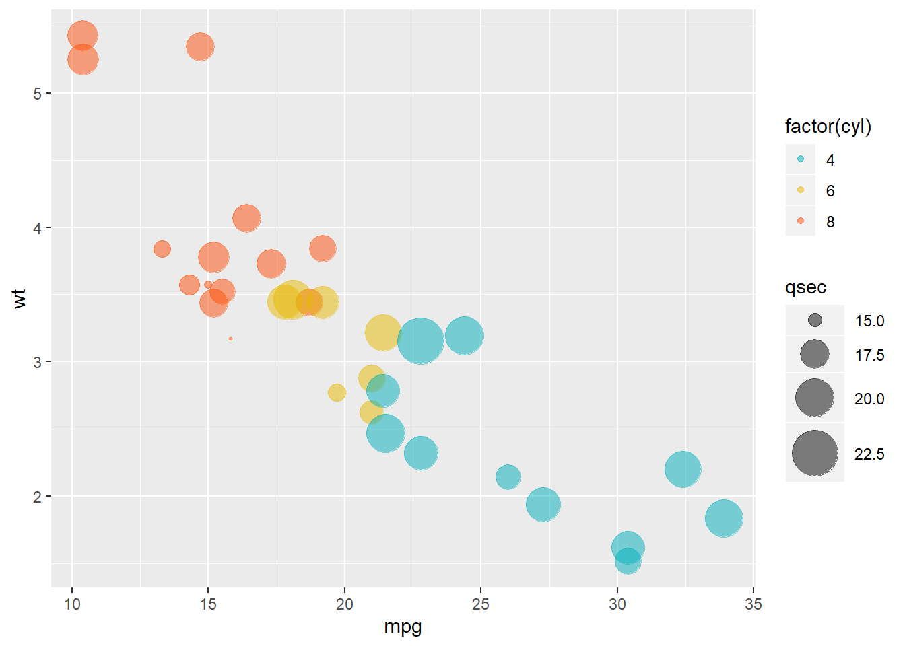
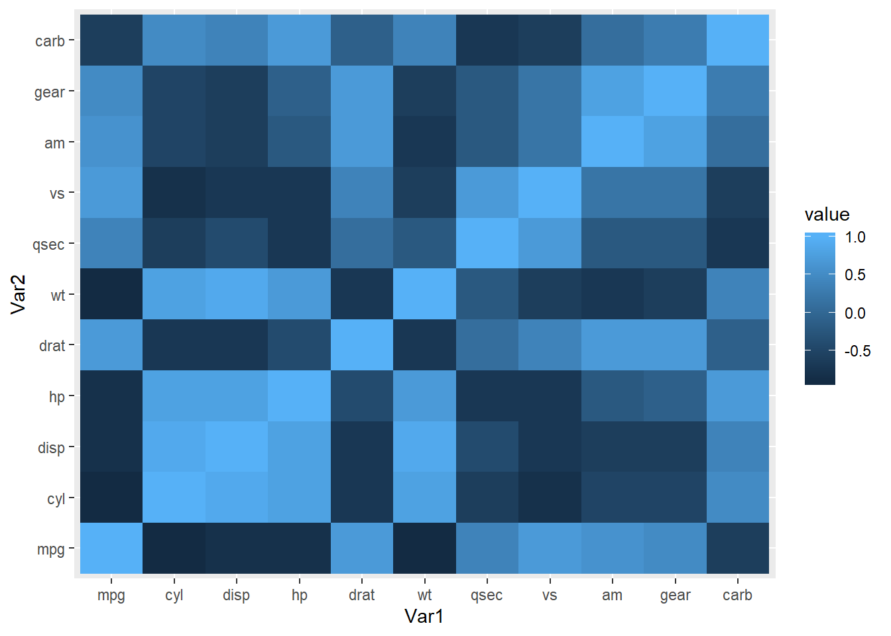
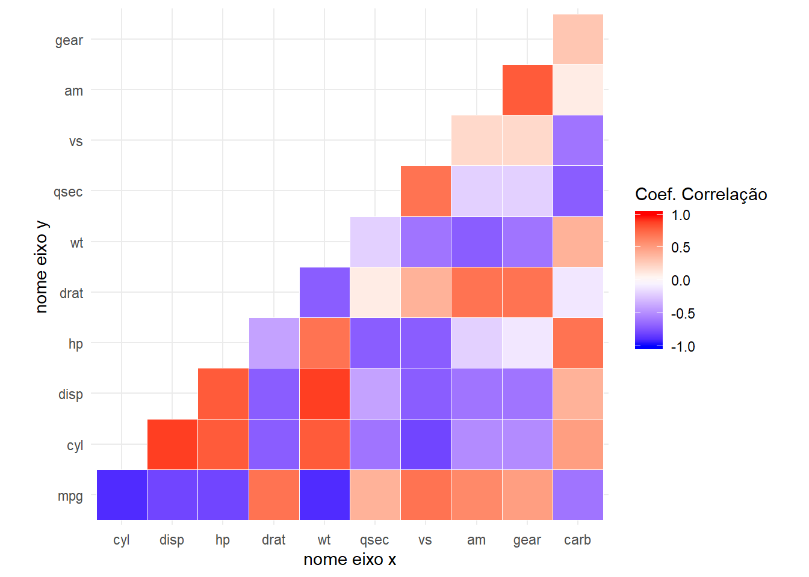

12 Criando Gráficos no R
A comunicação dos resultados talvez seja a parte mais importante do trabalho de um cientista de dados. Digo isso porque sem apresentar seus resultados de forma eficiente e clara, todo o trabalho desenvolvido é inútil.
A visualização de dados, representada por gráficos, é praticamente indispensável em qualquer apresentação de um projeto desenvolvido por um Cientista de Dados.
Certamente as cores e os tamanhos das barras, colunas ou qualquer outra representação vão facilitar muito o entendimento da mensagem que você deseja apresentar.
E posso te garantir que somos extremamente bem servidos quando o assunto é visualização de dados com a linguagem R.
Existe uma grande quantidade de bibliotecas que podemos usar para fazer gráficos realmente muito bonitos, claros e que irão surpreender os leitores de seus relatórios ou dashboards.
Não é o objetivo desse e-book falar sobre todas essas bibliotecas, mas vou citar aqui as minhas favoritas:
- ggplot2
- plot.ly
- googleVis
- rCharts
- leaflet
Dentre as 5 possibilidades aqui citadas, destaco a primeira: ggplot2. Iremos aprofundar mais nessa biblioteca pela quantidade de possibilidades que ela nos trás.
Usando a biblioteca `ggplot2 você irá conseguir fazer praticamente todos os tipos de gráficos disponíveis e com enorme capacidade de customização do seu gráfico.
A medida que você for dominando a linguagem R, sugiro que também explore outras bibliotecas. Muitas vezes as bibliotecas plot.ly, googleVis e rCharts irão te possibilitar a criação de gráficos mais chamativos do que a biblioteca ggplot2.
Eu costumo escolher a biblioteca que irei usar de acordo com o gráfico que desejo fazer.
A biblioteca leaflet, por exemplo, é específica para a construção de mapas interativos.
12.1 Criando gráficos com a biblioteca ggplot2
Os gráficos da biblioteca partem de uma ideia bem simples:
Todos os gráficos podem ser construídos com 3 elementos:
- O conjunto de dados
- Um sistema de coordenadas
- As marcas de representação visual (linhas, colunas, pontos, etc)
Na prática, veremos como podemos criar um gráfico simples e depois ir aperfeiçoando e personalizando de acordo com a nossa necessidade. Esse aperfeiçoamento acontece com novas linhas de código, que são acrescentadas ao gráfico que já foi criado.
Instalando o pacote ggplot2:
12.1.1 Seu primeiro gráfico
O código a seguir é dividido com os 3 elementos que citamos acima. O primeiro elemento é o conjunto de dados mtcars. Dataset que contém informações de diferentes modelos de carros.
O segundo elemento está dentro da função aes(), que é usada para definir a estética do gráfico (abreviação para aesthetics - estética em inglês).
Nesse elemento, definimos os eixos do gráfico. O gráfico irá mostrar a relação entre duas variáveis. A variável mpg (miles per gallon - Milhas percorridas para 1 galão de combustível) e wt (Weight - peso do carro).
A variável mpg será alocada no eixo x (horizontal) e a variável wt no eixo y (vertical).
O terceiro elemento são as marcas de representação visual do gráfico e são definidos pela função geom_point().
Como nesse exemplo não há nenhuma customização, a função geom_point() será vazia.

12.1.2 Incrementando o gráfico
Podemos incrementar um pouco o nosso gráfico adicionando uma terceira variável. Vamos adicionar a variável cyl, que representa o número de cilindros do carro.
Agora, com 3 variáveis, o gráfico continuará sendo bi-dimensional. Porém, os pontos do gráfico serão coloridos de acordo com a variável cyl.
Antes de criarmos o gráfico, segue uma consideração: a variável cyl está classificada como numérica.
## [1] "numeric"Os carros desse dataset possuem 4, 6 ou 8 cilindros. Então, nesse caso será mais interessante tratar a variável cyl como categórica. Essa pequena alteração fará muita diferença na visualização dos dados, pois irá coloria cada uma das categorias com cores totalmente distintas.
Caso se considerasse a variável cyl como numérica, as cores de cada quantidade de cilindros sofreria alterações apenas no tom da cor, dificultando a visualização de cada um dos grupos.
Para tratar a variável cyl como categórica, vamos apenas adicionar a função factor() ao inserir a variável na criação do gráfico.

Então, nesse último colocamos duas variáveis nos tradicionais eixos x e y - mpg e wt, respectivamente. Além disso, colorimos os pontos do gráfico de acordo com a quantidade de cilindros de cada carro.
E se precisássemos adicionar mais informações a esse gráfico?
12.1.3 O Gráfico de Bolhas - Bubble Chart
Além dessas 3 variáveis, se usarmos o gráfico de bolhas, poderemos adicionar uma 4ª variável ao nosso gráfico sem comprometer a sua qualidade.
Então, a variável mpg será representada pelo eixo x, a variável wt pelo eixo y, as quantidade de cilindros serão destacadas por cores diferentes de cada bolha.
A quarta variável escolhida é a qsec, que mede quantos segundos o carro precisa para alcançar 0,25 milhas.
Em nosso gráfico, a variável qsec será representada pelo tamanho da bolha.
Cada bolha é um ponto do gráfico e representa um carro do conjunto de dados.
ggplot(mtcars, aes(mpg, wt))+ #definição de qual é o dataset e quais são as variáveis dos eixos x e y.
geom_point(aes(color = factor(cyl), size = qsec), alpha = 0.5) + #definição de qual variável será representada pela cor e qual será representada pelo tamanho das bolhas.
scale_color_manual(values = c("#00AFBB", "#E7B800", "#FC4E07")) + #definição das cores das bolhas.
scale_size(range = c(0.5, 12)) # Amplitude do tamanho das bolhas
Pelos dois últimos gráficos, há fortes indícios que quanto maior o peso do carro (wt), menor é a quantidade de milhas que ele consegue percorrer com um galão de combustível.
Além disso, parece haver uma relação entre a quantidade de cilindros e essas duas variáveis. Por exemplo, os carros com 4 cilindros parecem ser mais leves e rodar mais milhas com um galão de combustível.
12.1.4 O gráfico de correlação
Para verificar a correlação entre as variáveis, podemos simplesmente uma tabela com a correlação entre elas:
corr <- round(stats::cor(mtcars), 1) #a função round é usada para arredondar as casas decimais do resultado.
corr## mpg cyl disp hp drat wt qsec vs am gear carb
## mpg 1.0 -0.9 -0.8 -0.8 0.7 -0.9 0.4 0.7 0.6 0.5 -0.6
## cyl -0.9 1.0 0.9 0.8 -0.7 0.8 -0.6 -0.8 -0.5 -0.5 0.5
## disp -0.8 0.9 1.0 0.8 -0.7 0.9 -0.4 -0.7 -0.6 -0.6 0.4
## hp -0.8 0.8 0.8 1.0 -0.4 0.7 -0.7 -0.7 -0.2 -0.1 0.7
## drat 0.7 -0.7 -0.7 -0.4 1.0 -0.7 0.1 0.4 0.7 0.7 -0.1
## wt -0.9 0.8 0.9 0.7 -0.7 1.0 -0.2 -0.6 -0.7 -0.6 0.4
## qsec 0.4 -0.6 -0.4 -0.7 0.1 -0.2 1.0 0.7 -0.2 -0.2 -0.7
## vs 0.7 -0.8 -0.7 -0.7 0.4 -0.6 0.7 1.0 0.2 0.2 -0.6
## am 0.6 -0.5 -0.6 -0.2 0.7 -0.7 -0.2 0.2 1.0 0.8 0.1
## gear 0.5 -0.5 -0.6 -0.1 0.7 -0.6 -0.2 0.2 0.8 1.0 0.3
## carb -0.6 0.5 0.4 0.7 -0.1 0.4 -0.7 -0.6 0.1 0.3 1.0A tabela acima é muito informativa, porém, caso seja visualizada como um gráfico será muito mais fácil de compreendê-la.
Para criar um gráfico com a correlação entre as variáveis, precisaremos fazer uma pequena transformação na tabela acima.
A matriz será transformada em uma nova tabela com 3 colunas: duas colunas com os nomes das variáveis e a terceira coluna com o valor correspondente da correlação entre elas.
Para isso, usaremos a biblioteca reshape2 e a função melt:
# install.packages("reshape2") #caso vc não já tenha instalado a biblioteca reshape2, precisa executar essa linha.
library(reshape2)## Warning: package 'reshape2' was built under R version 3.6.3
12.1.5 Aperfeiçoando o gráfico
Os gráficos facilitam muito a visualização dos dados. Porém, com mais um pouco de esforço, podemos melhorar muito a visualização desses dados.
corr[lower.tri(corr,diag = T)]<- NA ## selecionar apenas a parte superior da matriz (evitando informações repetidas)
library(reshape2)
dados_correlacao <- melt(corr,na.rm = T) #transformando os dados para as 3 colunas como anteriormente.library(ggplot2)
ggplot(data = dados_correlacao, aes(Var2, Var1, fill = value))+ #seleciona os dados e as variáveis para cada eixo, assim como a variável que determina a cor (value).
geom_tile(color = "white")+ #definindo a cor do contorno de cada quadrado.
scale_fill_gradient2(low = "blue", high = "red", mid = "white", #definindo a escala de cor das correlações
midpoint = 0, limit = c(-1,1), space = "Lab", #definindo a escala das correlações
name="Coef. Correlação") + #definindo o nome da legenda.
theme_minimal()+ #tema de fundo do gráfico
coord_fixed() + #mantém as coordenadas e as mediadas dos quadrados fixos.
labs(x = "nome eixo x", y = "nome eixo y") #define o nome para o eixo x e para o eixo y
Fique tranquilo que você não precisa decorar as funções acima. É importante que você leia e entenda o que cada uma está fazendo, só isso. E isso vai acontecer aos poucos, com a prática.
Digo que você não precisa decorar porque são infinitas possibilidades e não faz sentido nenhum gastar energia decorando isso. Basta que você pesquise no Google sobre o gráfico que deseja fazer e escolha o melhor para o seu caso.
Após encontrar na internet um código do gráfico que você deseja criar, basta fazer algumas adaptações para o seu caso.
Entendendo os comandos do gráfico acima: assim como nos outros gráficos do pacote ggplot2, temos o padrão de inserir os dados (dados_correlacao), depois definir as variáveis para os eixos x e y e o nome da variável que será colorida (aes(Var2, Var1, fill = value)). Os comandos seguintes são as marcas de representação visual e customizações do gráfico.
As mesmas estruturas acima podem ser utilizadas para todos os gráficos da biblioteca ggplot2, que possui diversos tipos de gráficos.


Xie, Yihui. 2019. Bookdown: Authoring Books and Technical Documents with R Markdown. https://CRAN.R-project.org/package=bookdown.